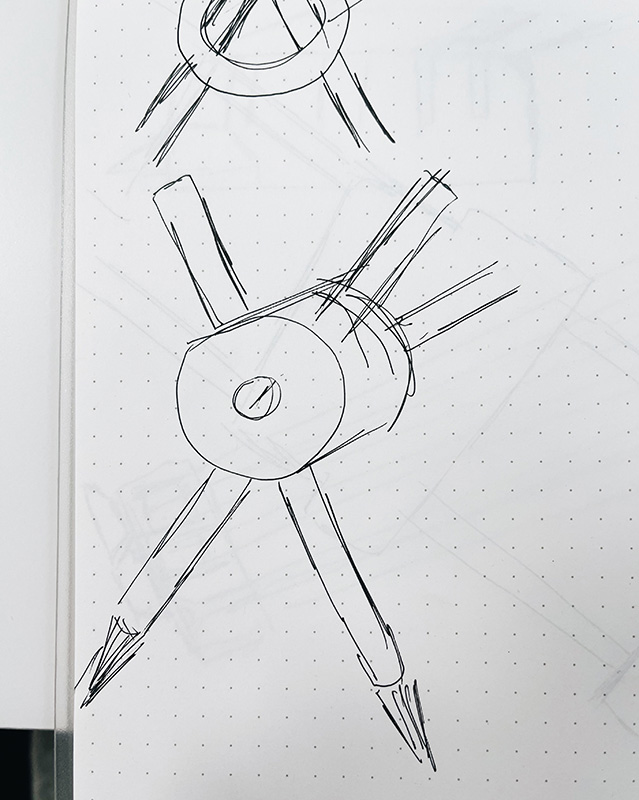
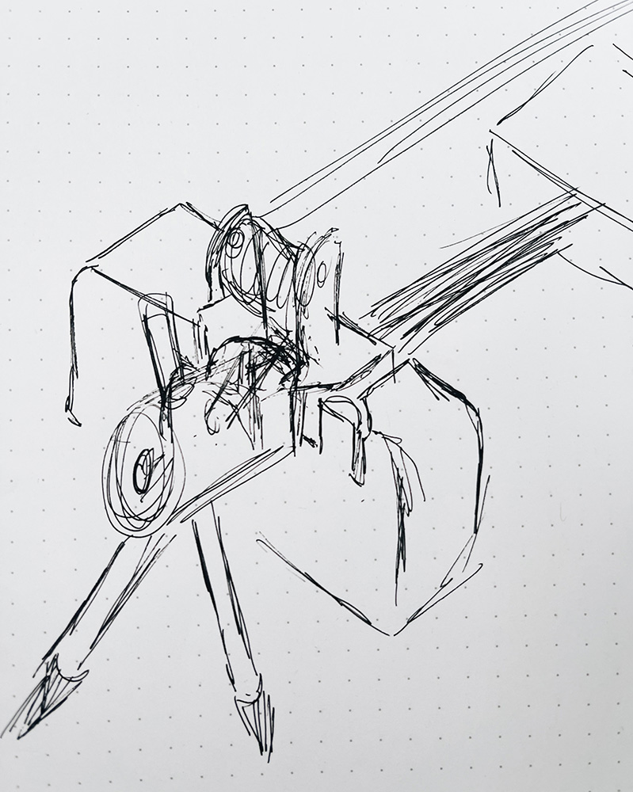

Welcome to my PS70 portfolio! Here you will find weekly progress of my digital fabrication journey.
11: computer programming
This week's assignment was to work on the most challenging aspect of our final project and create an MVP. Since our project will utilize some open source CNC drawing machine tutorials for the x- and y-axis movements, we decided that our MVP needed to address how the machine would deposit the painting materials into the water. There is no precedent for a mechanically operated suminagashi machine, so this will be our novel addition to the catalogue of computer-aided drawing projects. We didn't end up doing any computer programming (despite the name of this week) as we had to get the mechanics down before programming the parts to move - but that will come soon!
Testing the ink
A. Brushes
We started by testing the ink using the traditional suminagashi method - using a brush.We decided to first try the traditional method of suminagashi, which requires alternating using a brush with ink-surfectant-water solution and a brush with sufectant solution. We angled the brushes and created several rings in the water before using the rice paper to transfer the design to its permanent setting. This was a fun exercise because we hadn't actually tried this painting method yet! So we learned a lot about how to mix the solutions, position the brushes, time the brush movements, and other ways to keep the entire process in sync.


B. Syringe
Using a syringe was our initial idea in order to control how much solution could be deposited into the water during each print job. We developed a mechanism in Week 9 for a stepper motor to control the speed of a syringe pump. While this would be an interesting way to control liquid dispersal in small increments, it doesn't quite work for suminagashi. We think this is because the droplet size is too heavy or dense to float on top of the water; therefore, when the syringe drops the ink solution into the water, some of it makes a circle, but some of it sinks into the water itself.

C. Tubes
Our final test used some tubing in the makerspace, though somewhat unsuccessfully. Nathan had recommended this method because it wouldn't be too difficult to set up a motorized pump system to highly control the liquid dispersal and avoid too muncy armature associated with the brushes or syringes. Since we haven't built a mechanism to pump liquid through the tube, we used a syringe to insert some of the ink and pinched the tubing so that the ink wouldn't flow immediately. Then, we released the pressure and let the ink drip into the water, which had a similar effect to the syringe. There was also a lot of air trapped in the tube that made it difficult to get all the ink out swiftly.


Conclusion
Ater performing these tests, we decided that the most elegant and effective way to perform this process is to maintain the integrity of the original art form with brushes. Therefore, we are modeling a couple versions of brush holders than can attach to the y-axis of our machine. This will likely be the largest challenge of our project, since there are many precedents for building the x- and y-axis mechanisms of CNC drawing machines. We're exploring one option to have micro servo motors operate each brush next to one another and another option to have one micro servo rotating the 2 brushes to hit the water at different times.
Once these mechanics are ironed out, we will decide how to provide input data to the machine to influence how many rings the brushes make, how long the brushes stay in the water, and other potential decisions that will influence the printmaking process.
Building the y-axis arm
We started by prototyping the y-axis with just one brush holder. The brush is meant to be inserted into the triangular-shaped pen slider component at the front and secured using the orange finger dials. One timing belt will be connected directly to the pen holder (the larger main yellow component); the y-axis will be controlled using the stepper motor located in the raft mount (the middle green component). Another timing belt will be attached to the pen slider and controlled using a micro servo (located on the other end of the rod).
Since we were missing a few bearings and rods, we weren't able to complete the prototype. However, it was still very helpful to set this up as we realized we had to make a few adjustments such as:

Re-modelling the pen holder + pen slider
Since we need our machine to be able to hold two brushes, we started thinking about how we could incorporate this into the y-axis arm. We considered replacing the pen slider with a rotating part that could hold both brushes. We could control the rotation to dip one brush into the water bed at a time. However, we realized that this may be difficult to calibrate because the brush might move the ink as it moves in/out of the water, which wouldn't create the desired effect.


Ultimately, instead of modifying the pen slider, I decided to add another pen holder directly to the existing y-axis pen holder. I created two versions: one with stacked two pen holder components (left) and one with two side-by-side pen holders (right). At the moment of doing this writeup, these models are being printed (and reprinted...) but stay tuned for updates!